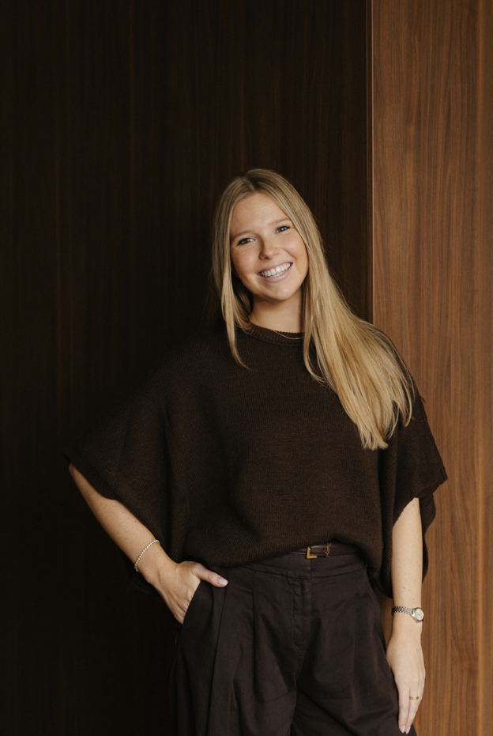
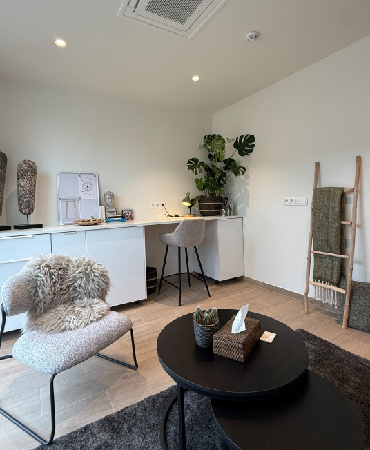

Praktijk Noorderveld
Legeweg 151A Brugge Sint-Andries
- Aanwezig op
- woensdag en donderdag
- Aanvragen via
- psy.julie@outlook.com
Klinisch psycholoog
Kinderen, jongeren & jongvolwassenen

Julie behaalde haar masterdiploma in de Klinische Psychologie aan de UGent en is erkend door de Psychologencommissie (erkenningsnr: 9821112845) en de FOD Volksgezondheid (visumnr: 472718). Daarnaast behaalde ze een bachelor in de Orthopedagogie. Momenteel volgt Julie de vierjarige postgraduaatsopleiding Cliëntgerichte Psychotherapie voor Kinderen & Jongeren aan de KU Leuven.
Julie begeleidt vnl. kinderen, jongeren en jongvolwassenen die ondersteuning zoeken bij het herkennen, begrijpen en reguleren van emoties, identiteitsontwikkeling, het doorbreken van negatieve patronen en overtuigingen, het versterken van zelfcompassie, zelfvertrouwen en veerkracht, relationele en hechtingsgerelateerde moeilijkheden, het leren kennen en aangeven van persoonlijke grenzen, verlies en ingrijpende levensgebeurtenissen. Daarnaast kunnen ook personen met (een vermoeden van) ADHD of ASS bij haar terecht voor begeleiding, psycho-educatie en ondersteuning op maat.
Elke begeleiding vertrekt vanuit de individuele vragen en behoeften van de cliënt.
Julie werkt deels geconventioneerd binnen WINGG en NOWE (RIZIV-nummer: 7-06130-30-000). Let op: niet iedereen komt in aanmerking voor een terugbetaling gezien de beperkt beschikbare uren binnen de conventie. Meer info hierover vindt u op: wingg.be/aanbod/eerstelijnspsycholoog

Legeweg 151A Brugge Sint-Andries
Kraaiennestplein 5 Knokke-Heist
| Traject | Tarief |
|---|---|
| Intakegesprek (50min.) | €80 |
| Reguliere sessie (50min.) | €70 |
| Externe sessie (50min.) | €70 + trajectvergoeding |
| Klasobservatie/schooloverleg (50min.) | €70 + trajectvergoeding |
| Verslaggeving | €80 |
Indien u verhinderd bent, vraag ik vriendelijk om uw afspraak minstens 24 uur op voorhand te annuleren. Bij laattijdige annulatie of afwezigheid ben ik genoodzaakt de sessie aan te rekenen.